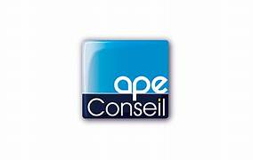
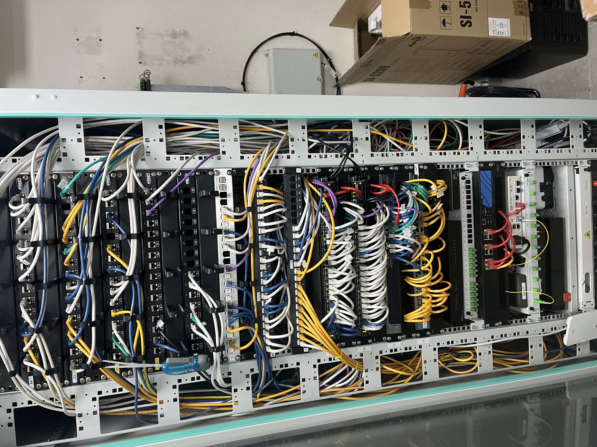
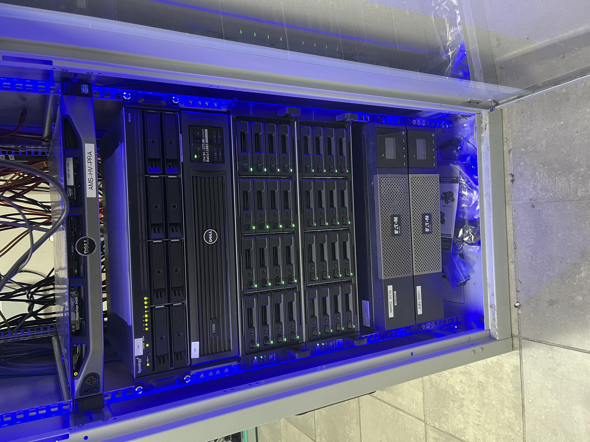
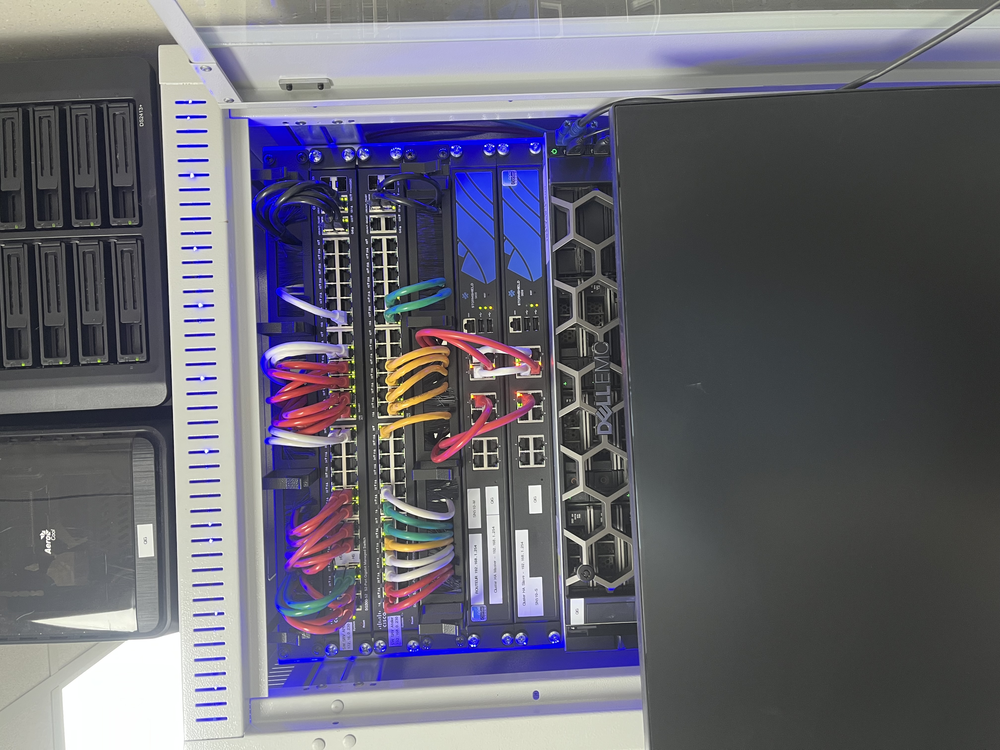
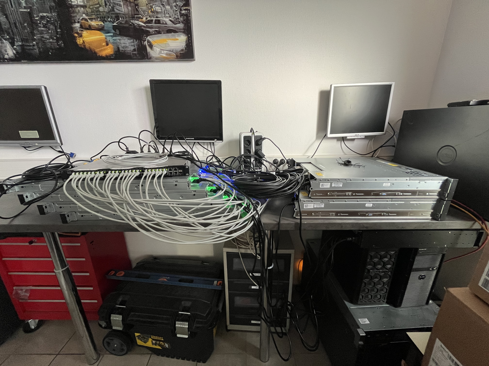

APE Conseil est une entreprise française spécialisée dans le conseil en systèmes et logiciels informatiques, basée à Rillieux-la-Pape (Rhône). Elle est immatriculée au Registre du Commerce et des Sociétés depuis le 9 avril 1991 sous le numéro 382 741 593 et exerce sous la forme juridique d'une SAS (Société par Actions Simplifiée).
L'entreprise compte 23 salariés, ce qui en fait une Petite ou Moyenne Entreprise (PME) dynamique dans le secteur informatique.
L'équipe est composée d'un service commercial, d'un service technique, d'un service d'administration système et réseau, d'un service logiciel et d'un service RH.

APE Conseil accompagne les organisations, notamment les artisans et les PME, dans leur transition numérique et la gestion de leurs systèmes d'information. Ses prestations couvrent plusieurs domaines clés de l'informatique :
- Infogérance et assistance support pour les utilisateurs
- Maintenance informatique des postes et serveurs
- Sécurité informatique des systèmes et des données
- Solutions cloud & sauvegarde externalisée
- Fourniture et conseil en matériel informatique
- Solutions de messagerie et antivirus adaptés aux besoins des entreprises
L'entreprise met l'accent sur des solutions fiables et adaptées, avec la possibilité de support à distance ou sur site selon les besoins des clients.
Le siège social est situé au 65 Rue du Pesage, 69140 Rillieux-la-Pape. L'entreprise possède également d'autres établissements actifs, notamment une agence dans le sud de la France, ce qui témoigne de son développement géographique.
Par son activité de conseil et de support informatique, APE Conseil offre aux organisations une présence experte pour la gestion et l'évolution de leurs infrastructures informatiques. Elle fournit des solutions adaptées aux contraintes du quotidien professionnel, tout en favorisant la continuité de service, la performance et la sécurité informatique.
Ces chiffres montrent qu'APE Conseil est une entreprise stable avec un volume d'activité significatif dans son secteur local, centrée sur l'informatique professionnelle et la transformation digitale.



